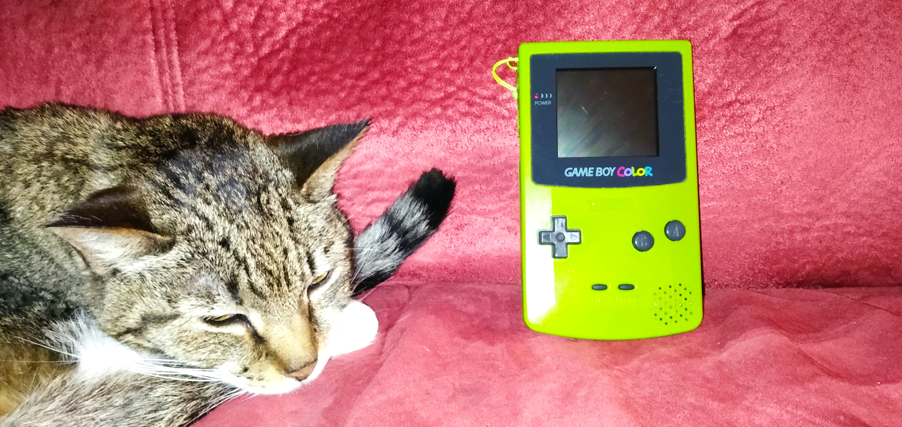
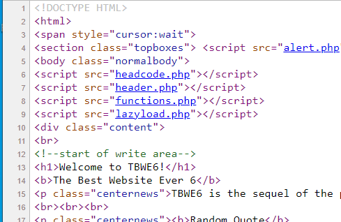
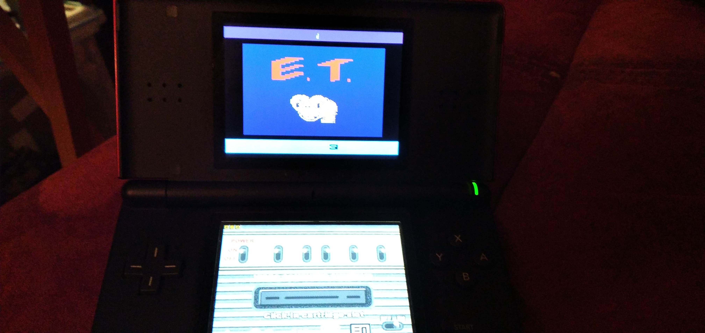

Production Accomplishment
I have done many things in and outside of school. A few of them are:
Cheney
This entire website was programmed by me. I did not use Google Sites like the other people did for this assignment.
Starry Night Presentation for the Cheney TVs
Veterans Day Video for Cheney TVs
Fixing computer issues around the building involving accounts, sound, monitor, SmartBoard, and printer related problems.
Other
Making a website for the Stafford Historical Society
Configuring and setting up a rack server
Creating Samba servers and accessing them with clients with differing OSs across a network
Setting up an Apache web server

This is GameBoy Color I restored. When I bought it, it was digusting, and somewhat functional but I disassembled it and cleaned the shell and PCB and replaced damaged parts.

This is some code from my famous TBWE6, it is now old and outdated, but that was the pinnacle of my websites at that point.

I made this recently for Cheney Tech's automotive at the request of my teacher.
This is
This is
This is

This is one production accomplishment, modding a DS Lite. In this picture, I am running an Atari 2600 emulator with the game ET loaded.